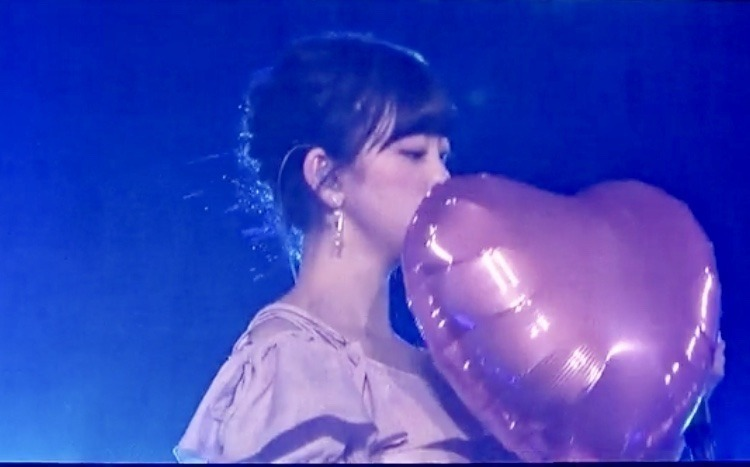

2018/0903Mon不思議だね。

名古屋ドーム2日間のブログを途中まで書いていたので
アップさせていただきます。
来てくださった皆さん
ありがとうございました。
実は、私の体調がライブの3日前から優れず
病院に行き点滴と注射をし何とかステージに立たせていただけることができました
元々扁桃腺が腫れて高熱が出やすかったのもありますが、
本番前に体調を崩してしまった自分が許せず悔しさもあり
苦しくて...
ずっとずっと名古屋ドームに立てる日を楽しみにしていたのでこのまま出られないのは本当に悔しいって思って無理を言い出させていただきました。
もっと身体を強くしなきゃって改めて思いました。
でも、こんなに暑い中
並んで来てくださって
たのしみに待っていてくださってる方がいて
だから私もより
皆さんに会いたい、会いに行かないといけない
っていう強い気持ちが自分の中にずっとあって...
声援やタオルやサイリウムやうちわ
たくさん見えています
100%のパフォーマンスができなくて
ごめんなさい。でも、心の底から
楽しかったです...本当に。
あの景色を見ることができてよかったです
本当に、ありがとうございます
仙台公演は医者とスタッフさんとの話し合いで
出演できませんでしたが会場でメンバーと
ファンの皆さんが私の名前でコールアンドレスポンスをしてくれたと聞いて、嬉しかったです。
またライブできたらいいな...
楽しみにしていてくださった方々
スタッフさん メンバー
ご心配、ご迷惑をおかけして申し訳ありませんでした。
名古屋ドームの初日に実はジコチュープロデュースで"空気感"を披露させていただきました
モニターの写真で少しでも
来られなかった方にお伝えできれば...
サブ地元。名古屋で、
しかもこのほんわかメンバーで披露できて
リハも含め凄く楽しくて
終わったあとにみんなが楽しかったって
言ってくれたのが何よりも嬉しかったです
実はかなり演出にこだわりました

左から楓、私、桃子、れな
まず洋服
頭先から足先まで私が私物を取り入れつつ
メンバーをコーディネートしました
楓はスタイルの良さを生かして
白のショートパンツに
お腹チラ見せで"ヘルシー元気女子"
くすみブルーが
大人っぽくて似合ってました
私はオフショルの淡いピンクワンピースで
メイクもアイシャドウからチークリップまで
ar風ガーリーで"にこにこ系女子"
桃子は上品な感じとちょっと個性的な感じを
出したくて赤を基調にしたお利口スタイルに
しました！本人が着たいって言った服に。
黒髪に赤が華やかでした
"お母さんに紹介したい癒し系女子"
れなはモノトーンのイメージがあるし
現役大学生だから白Tで抜け感を出しつつ
帽子ベルトブーツでいい女感をだして
"何でもできる知的女子"
私服かなっていうくらい着こなしてくれました
みんなの意見も取り入れながら
似合いそうなスタイリングをしてみました〜

あとはこの1人ずつのパーソナルデータ。
私が実際にインタビューをして
スタッフさんに作っていただきました
ありがとうございます
恋愛シュミレーションゲームみたいにしたくて
1人1人違う雰囲気の女の子像で
作らせていただきました

乃木恋リアルも久しぶりで緊張したなぁ。。笑
シチュエーションも
名駅前待ち合わせ(名古屋といえばね！)
付き合って2年(空気感の歌詞より)
と、少し名古屋要素と歌詞の要素を
いれてみました
空気感の歌詞、甘くて好きです

ふわふわとした私のすきな世界観で
本当にジコチューなプロデュースでしたが
幸せでした
ありがとうございました
では。
2018/09/03 14:24
コメント(749)
ナゴヤ乃木恋リアル良かったですよ。
みおならしいジコチュープロデュースでした。
宮城のファイナルもコール&レスポンスがしたいメ
ンバーの要望からのみおなに届けってなってメン
バー思いのメンバーが多いグループだなって思い
ました。
みおならしいジコチュープロデュースでした。
宮城のファイナルもコール&レスポンスがしたいメ
ンバーの要望からのみおなに届けってなってメン
バー思いのメンバーが多いグループだなって思い
ました。
未央奈ちゃん、こんばんわ～！
扁桃腺の腫れ、大丈夫カナ？
らじらーの時から言ってたけど、本当につらかったんだね、、、。
それでも、沢山面白いお話してくれて、ありがとう♥
頑張る未央奈ちゃんを応援してます！
ps：口内炎は治りましたか？お大事に。
扁桃腺の腫れ、大丈夫カナ？
らじらーの時から言ってたけど、本当につらかったんだね、、、。
それでも、沢山面白いお話してくれて、ありがとう♥
頑張る未央奈ちゃんを応援してます！
ps：口内炎は治りましたか？お大事に。
元気に帰ってくるの待ってるよ！！
頑張って
未央奈ブログ更新ありがとう！
宮城で未央奈の分まで盛り上げてきたよ！！！
モバメで元気になってきたって報告してくれて少し安心した〜
しっかりゆっくり休んで完璧に治してね！
握手会楽しみにしてるよーー！！
宮城で未央奈の分まで盛り上げてきたよ！！！
モバメで元気になってきたって報告してくれて少し安心した〜
しっかりゆっくり休んで完璧に治してね！
握手会楽しみにしてるよーー！！
名古屋も本当は休んでもらいたかったけど無理して出てくれて本当にありがとうございます。
ブログを読んでプロだなと思って単純にカッコいいなと思ってライブ前よりももっと好きになってしまいました！笑
ブログを読んでプロだなと思って単純にカッコいいなと思ってライブ前よりももっと好きになってしまいました！笑
名古屋初日で、ライブの最初のほうで未央奈ちゃんが見当たらなくて体調悪かったのかなぁと思っていました。そしたら乃木恋の映像のところで出てきてくれて、安心しました。
ジコチュープロデュースもとっても可愛かったです
お疲れ様でした。出てくれてありがとう。
ジコチュープロデュースもとっても可愛かったです
お疲れ様でした。出てくれてありがとう。
堀ちゃん、体調大丈夫？あんまり、無理しないでね。今回の、夏の全国ツアー、バースデーライブの2日目、参加することができました。楽しかった。また行きたいです。今週の、日曜日にある、握手会に、参加する予定です。さらに、今回のシングルでは、初めて、個別握手会に、参加します。どっちも楽しみです。どのレーンに行くかは、まだ㊙️
無理せず、ゆっくりと治して下さい。
コールアンドレスポンス！届いた？
れいかキャプテンの、号令の下でしたよ。
コールアンドレスポンス！届いた？
れいかキャプテンの、号令の下でしたよ。
体調は大丈夫？
無理しないでね〜^ ^
また元気な姿を握手会や、ライブで見たいです。
無理しないでね〜^ ^
また元気な姿を握手会や、ライブで見たいです。
未央奈！！おつかれ！！無理してでもステージに立ってくれたのは皆嬉しかったと思うよ！！俺も見たかったな～！でも未央奈がブログに載せてくれたからライブ行った気になれたよ笑
でも今は治すことに集中してね！お医者さんのOK出るまでだからね！！
でも今は治すことに集中してね！お医者さんのOK出るまでだからね！！
無理せずに
早く笑顔がみたいです！
早く笑顔がみたいです！
未央奈体調大丈夫？
回復に向かってるなら良かった❗
また、あの元気な姿ん見してね！
回復に向かってるなら良かった❗
また、あの元気な姿ん見してね！
焦らずゆっくり体調治してください。
また元気な姿見れる事を楽しみにしてます！
また元気な姿見れる事を楽しみにしてます！
元気になってほんとに良かった。名古屋公演2日とも行ってほんとに最高だったよ！これからも無理しすぎないようにね
ファンはずっと待ってるよ
ファンはずっと待ってるよ
未央奈プロデュース素敵！
もっと色んなメンバーのコーディネートが見てみたい！
体調も良くなってきたみたいで良かった。
無理しないでゆっくりしてね！
もっと色んなメンバーのコーディネートが見てみたい！
体調も良くなってきたみたいで良かった。
無理しないでゆっくりしてね！
堀さん素敵な演出ありがとうございます。
少しずつ体調治してまた素敵な笑顔を見せてくれると嬉しいです。お大事になさってください。
少しずつ体調治してまた素敵な笑顔を見せてくれると嬉しいです。お大事になさってください。
ブログありがとう！ゆっくり休んでね！お大事に
みおな～お疲れさまー。
ブログ更新ありがとう。
名古屋公演見たかったー。めっちゃかわいい！
仙台公演両日参加してきました。
２日目の「未央奈！大好き！」コールが届いたようで何よりです。
「待ってる！」のコールの通り、ライブで未央奈を見られることを楽しみにしています。ゆっくり、しっかり休んでくださいね。
それでは！おやすみおな～
ブログ更新ありがとう。
名古屋公演見たかったー。めっちゃかわいい！
仙台公演両日参加してきました。
２日目の「未央奈！大好き！」コールが届いたようで何よりです。
「待ってる！」のコールの通り、ライブで未央奈を見られることを楽しみにしています。ゆっくり、しっかり休んでくださいね。
それでは！おやすみおな～
ブログ更新ありがとうね(*^^*)
名古屋行けなかったから、未央奈のジコチュープロデュースのことが書いてあって嬉しいよーーー(T_T)
仙台公演の気に病まないでね( ＾∀＾)
自分達は未央奈の体調が一番大事だからね(^_^)v
名古屋行けなかったから、未央奈のジコチュープロデュースのことが書いてあって嬉しいよーーー(T_T)
仙台公演の気に病まないでね( ＾∀＾)
自分達は未央奈の体調が一番大事だからね(^_^)v
お大事に。
先は長いです、休める時に休んで
たくさん食べてね。
先は長いです、休める時に休んで
たくさん食べてね。
また元気な未央奈に会えるの楽しみにしてるよ！
未央奈〜！大好き！待ってる〜！
全力でコールしたよお！！
また、LIVEできるの待ってるね！！
そしたら絶対行く〜！！
無理せずゆっくり休んでね♪
ばいぃ
体調いかがですか？
ゆっくり直して、大復活！！
してね！！
ゆっくり直して、大復活！！
してね！！
堀ちゃん、こんばんわ(*ﾟ▽ﾟ)ﾉ
そして！
真夏の全国ツアー2018ライブお疲れ様でした。
名古屋公演、体調悪いなか、
ファンの為に出てくれて、ほんと感謝してます。
初日は行けなくて...。
堀推しの僕は残念だったけど( ｡ﾟДﾟ｡)
でも！
今日のブログで未央奈が丁寧に書いてくれた
ジコチュープロデュース『空気感』すごく
分かりやすかったよ～
堀ちゃん、ありがとう❤️
乃木恋やろうかな～

もちろん未央奈でね(笑)
でも、
自分はナゴヤドーム２日に参戦しました✌️
飛鳥プロデュース『女は一人じゃ眠れない』に
堀ちゃんが一緒に歌ってくれたのが
嬉しかったし♪ますます二人の事が
大好きです( 〃▽〃)
未央奈、飛鳥ずっと仲良く☺️❤️☺️
これから、二人が乃木坂46を引っ張ってって
ください。ずっと応援してます(ｏ^-^)尸
そして！平成最後の夏は、
未央奈、乃木坂46メンバー
たくさんの思いでありがとう❤️
いつも写真ありがとう～
そして！そして！
昨日の乃木坂46SHOWの
絢音ちゃんのボケ、堀ちゃんのツッコミ、
すずほりコントも、めちゃ面白かったよ☺️
つぎあるとしたら、
絢音ちゃんツッコミ、堀ちゃんボケも、
見てみたいな～(笑)
ジコチューで行こう！
未央奈たくさん映って大満足でした
あ！！
体調少しは良くなって安心しました。
でも！まだ、ゆっくりでいいからね。
未央奈がんばれq(^-^q)！
では！またねo(ﾟ▽＾)ﾉ
ばーーい✋未央奈命(笑)
そして！
真夏の全国ツアー2018ライブお疲れ様でした。
名古屋公演、体調悪いなか、
ファンの為に出てくれて、ほんと感謝してます。
初日は行けなくて...。
堀推しの僕は残念だったけど( ｡ﾟДﾟ｡)
でも！
今日のブログで未央奈が丁寧に書いてくれた
ジコチュープロデュース『空気感』すごく
分かりやすかったよ～
堀ちゃん、ありがとう❤️
乃木恋やろうかな～
もちろん未央奈でね(笑)
でも、
自分はナゴヤドーム２日に参戦しました✌️
飛鳥プロデュース『女は一人じゃ眠れない』に
堀ちゃんが一緒に歌ってくれたのが
嬉しかったし♪ますます二人の事が
大好きです( 〃▽〃)
未央奈、飛鳥ずっと仲良く☺️❤️☺️
これから、二人が乃木坂46を引っ張ってって
ください。ずっと応援してます(ｏ^-^)尸
そして！平成最後の夏は、
未央奈、乃木坂46メンバー
たくさんの思いでありがとう❤️
いつも写真ありがとう～
そして！そして！
昨日の乃木坂46SHOWの
絢音ちゃんのボケ、堀ちゃんのツッコミ、
すずほりコントも、めちゃ面白かったよ☺️
つぎあるとしたら、
絢音ちゃんツッコミ、堀ちゃんボケも、
見てみたいな～(笑)
ジコチューで行こう！
未央奈たくさん映って大満足でした
あ！！
体調少しは良くなって安心しました。
でも！まだ、ゆっくりでいいからね。
未央奈がんばれq(^-^q)！
では！またねo(ﾟ▽＾)ﾉ
ばーーい✋未央奈命(笑)
更新ありがとうございます
そして、真夏の全国ツアーおつかれ様です。
次に未央奈ちゃんのパフォーマンスを見れるのを楽しみにしています！
お大事に！
そして、真夏の全国ツアーおつかれ様です。
次に未央奈ちゃんのパフォーマンスを見れるのを楽しみにしています！
お大事に！
無理せず頑張って！！
堀ちゃん、ブログ更新ありがとう〜
堀ちゃん、元気そうで良かった！
名古屋ライブ行けなかったので、いろいろ教えてくれて
嬉しかったよー
年内ライブないので、握手会楽しみにします！
堀ちゃん、無理しないでねー
皆んな、堀ちゃんの味方だよ〜
堀ちゃん、大好きだよー
堀ちゃん、元気そうで良かった！
名古屋ライブ行けなかったので、いろいろ教えてくれて
嬉しかったよー
年内ライブないので、握手会楽しみにします！
堀ちゃん、無理しないでねー
皆んな、堀ちゃんの味方だよ〜
堀ちゃん、大好きだよー
元気が１番！
未央奈ちゃん、ブログありがとう
体調はどう？ライブ行けなかったけど、素敵なジコチュープロデュースね。
21st個握は結構行くからよろしくね！
体調はどう？ライブ行けなかったけど、素敵なジコチュープロデュースね。
21st個握は結構行くからよろしくね！
まちゅ「コールアンドレスポンスがしたい」
いくちゃん「それなら今回体調不良で来られなかった堀ちゃんに向けてやろう！」
玲香「みんなは堀ちゃんて呼ばないか..."未央奈".だよね!じゃ、いくよ！未央奈！」
客「未央奈！」
玲香「未央奈！」
客「未央奈！」
玲香「未央奈！」
客「未央奈！」
玲香「大好き！」
客「大好き！」
玲香「大好き！」
客「大好き！」
玲香「待ってる！」
客「待ってる！」
玲香「待ってる！」
客「待ってる！」
玲香「未央奈！」
客「未央奈！」
玲香「未央奈ｰｰｰｰｰ!!!!!」
客「未央奈ｰｰｰｰｰｰ!!!!」
僕の記憶の限りではこんな感じでした！未央奈ちゃんはあそこにはいられなかったけれど、メンバーのみんな、そして我々ファン一同の未央奈ちゃんへの想いは確かにあそこにありました。久保ちゃんも帰ってきてくれて、あの場所には乃木坂46に関わるみんなの想いがあったと思います。最後に、若様の言葉を借りさせていただきます。"やっぱ乃木坂だな!!!"
いくちゃん「それなら今回体調不良で来られなかった堀ちゃんに向けてやろう！」
玲香「みんなは堀ちゃんて呼ばないか..."未央奈".だよね!じゃ、いくよ！未央奈！」
客「未央奈！」
玲香「未央奈！」
客「未央奈！」
玲香「未央奈！」
客「未央奈！」
玲香「大好き！」
客「大好き！」
玲香「大好き！」
客「大好き！」
玲香「待ってる！」
客「待ってる！」
玲香「待ってる！」
客「待ってる！」
玲香「未央奈！」
客「未央奈！」
玲香「未央奈ｰｰｰｰｰ!!!!!」
客「未央奈ｰｰｰｰｰｰ!!!!」
僕の記憶の限りではこんな感じでした！未央奈ちゃんはあそこにはいられなかったけれど、メンバーのみんな、そして我々ファン一同の未央奈ちゃんへの想いは確かにあそこにありました。久保ちゃんも帰ってきてくれて、あの場所には乃木坂46に関わるみんなの想いがあったと思います。最後に、若様の言葉を借りさせていただきます。"やっぱ乃木坂だな!!!"
みおな、体調は回復したのかな？？季節の変わり目は体調を崩しやすいから気を付けてな！！
扁桃腺を鍛えるって訳にはいかないもんねぇ こればかりは仕方がないよねぇ
また来年のお楽しみ
46SHOW 未央ちゃんチョー可愛いかった 絢音ちゃんとのコントも笑ったよ
体調は良くなりましたか？ お大事にね
また来年のお楽しみ
46SHOW 未央ちゃんチョー可愛いかった 絢音ちゃんとのコントも笑ったよ
体調は良くなりましたか？ お大事にね
堀ちゃん、体調はいかがですか？少しは良くなったかな。
仙台公演は残念でしたが、前向きに頑張ろうとしている
姿にファンとして誇りに思います。
ホント無理しないでしっかり回復に努めて下さい。
元気な堀ちゃんが一番好きなので。
素敵なブログありがとうございます。
仙台公演は残念でしたが、前向きに頑張ろうとしている
姿にファンとして誇りに思います。
ホント無理しないでしっかり回復に努めて下さい。
元気な堀ちゃんが一番好きなので。
素敵なブログありがとうございます。
未央奈ちゃん、今日も一日お疲れさまです。
扁桃腺が腫れて高熱が出やすかったんですね。
声のお仕事をしているので辛いですね。
今までも我慢してきたこともあったでしょうね。
でもそんな中でも、「このまま出られないのは
本当に悔しいって」「皆さんに会いたい、会いに
行かないといけないっていう強い気持ちが自分の中に
ずっとあって...」、この想いのまま頑張ってきたんですね。
頭が下がります。
もし無理しないでください、って声を掛けても
絶対頑張っちゃうんでしょうね。（笑）
そんな私たち思いの未央奈ちゃんが大好きですし、
反面、正直やっぱり無理して欲しくないです。
私たちは未央奈ちゃんが元気になるまで待ちます。
元気になるまで、そばにいます。
だから今はゆっくり休んで治療に専念してください。
そしてまた元気になったら思い切り
はじけちゃってください！！！
扁桃腺が腫れて高熱が出やすかったんですね。
声のお仕事をしているので辛いですね。
今までも我慢してきたこともあったでしょうね。
でもそんな中でも、「このまま出られないのは
本当に悔しいって」「皆さんに会いたい、会いに
行かないといけないっていう強い気持ちが自分の中に
ずっとあって...」、この想いのまま頑張ってきたんですね。
頭が下がります。
もし無理しないでください、って声を掛けても
絶対頑張っちゃうんでしょうね。（笑）
そんな私たち思いの未央奈ちゃんが大好きですし、
反面、正直やっぱり無理して欲しくないです。
私たちは未央奈ちゃんが元気になるまで待ちます。
元気になるまで、そばにいます。
だから今はゆっくり休んで治療に専念してください。
そしてまた元気になったら思い切り
はじけちゃってください！！！
少しずつ元気になってきたみたいで良かった!!
ただ無理せずゆっくり休んでくださいね。
ただ無理せずゆっくり休んでくださいね。
体調良くなっていくのを祈ってます！
自分のペースでゆっくり治してください！待ってます
自分のペースでゆっくり治してください！待ってます
ブログ更新ありがとう！
今は自分の身体を最優先にね！
今は自分の身体を最優先にね！
名古屋お疲れ様ーー！
名古屋の写真の未央奈かわいい
宮城の時はずっと未央奈のペンライトカラーでいたよ！笑
未央奈でコールアンドレスポンスやったときはめっちゃ叫んだ笑笑
ゆっくりでいいから元気な未央奈の姿がみたいな！
お大事にね！
名古屋の写真の未央奈かわいい
宮城の時はずっと未央奈のペンライトカラーでいたよ！笑
未央奈でコールアンドレスポンスやったときはめっちゃ叫んだ笑笑
ゆっくりでいいから元気な未央奈の姿がみたいな！
お大事にね！
衣装の選定理由とかの話が聞けて嬉しいです。
大事な時期に病気になってしまったのは残念だけど仕方のないことですし、いくら自分を責めてもそれはもう過ぎたことなので前を向いて歩きだしてください。
病気になりやすいのならば、元気なときに明一杯頑張ればいいだけです。元気なときを幸せだと思って過ごしましょう。
工事中の日村さんの廃品回収の堀ちゃんおもしろかったです。2期生を堀ちゃんが盛り上げてください。
大事な時期に病気になってしまったのは残念だけど仕方のないことですし、いくら自分を責めてもそれはもう過ぎたことなので前を向いて歩きだしてください。
病気になりやすいのならば、元気なときに明一杯頑張ればいいだけです。元気なときを幸せだと思って過ごしましょう。
工事中の日村さんの廃品回収の堀ちゃんおもしろかったです。2期生を堀ちゃんが盛り上げてください。
全ツ、お疲れさまでした(^^)
ナゴヤドーム、楽しかったぁー
ジコチュープロデュース。さすが、みおちゃんだなぁーって思った
4人とも、可愛いかったゾ‥(笑)
ナゴヤドーム、楽しかったぁー
ジコチュープロデュース。さすが、みおちゃんだなぁーって思った
4人とも、可愛いかったゾ‥(笑)
未央奈ブログ更新ありがとう！
名古屋は行けなかったけど、未央奈のジコチュープロデュースへのこだわりが伝わってきたよ。
体調は大丈夫かな？お大事にね！
名古屋は行けなかったけど、未央奈のジコチュープロデュースへのこだわりが伝わってきたよ。
体調は大丈夫かな？お大事にね！
無理せずはやくなおしてください〜
こんばんは～(^-^)
拘りのプロデュース見たかった～(*^^*)
早く良くなると良いね(*^^*)
お大事に～(^o^ゞ
拘りのプロデュース見たかった～(*^^*)
早く良くなると良いね(*^^*)
お大事に～(^o^ゞ
無理せずゆっくり治してね。
ずっと待っとるよ~
ずっと待っとるよ~
名古屋ドーム、無理して出てくれてありがとう!すごく楽しかったよ!あの日はLIVE前に丸デブ総本店に行ったら、堀ファンの皆さんで長蛇の列が出来てて3時間も並んだよ（笑）。ホントにすごい影響力だと改めてびっくりしたよ!これからも愛知をサブ地元として宜しくね!ゆっくり休んでね!ありがとう
こんばんは
話が聞けてとっても嬉しいな♪
体調の件は名古屋前から心配してたけど、
サブ地元だから頑張ったのも分かりますよ～
空気感はとっても可愛い曲ですね！
それぞれの洋服と風船も可愛いらしいです☆
空気感の空気感が心地よいですね！
みおちゃんのセンスがとても活きてますね♡
みおちゃんの元気な姿を待ってますよ☺
話が聞けてとっても嬉しいな♪
体調の件は名古屋前から心配してたけど、
サブ地元だから頑張ったのも分かりますよ～
空気感はとっても可愛い曲ですね！
それぞれの洋服と風船も可愛いらしいです☆
空気感の空気感が心地よいですね！
みおちゃんのセンスがとても活きてますね♡
みおちゃんの元気な姿を待ってますよ☺
こんばんは。未央奈ブログ、初めてのコメントかも。
名古屋初日参加しました。絶対に未央奈のプロデュースあるだろうなーと思って楽しみにしてたら、まさかの推しの山崎さんまで出てきて感激したよ…あのプロデュース、今年行った公演の中で一番よかった◎本当にありがとう。
そして今は本当にお大事に。少し良くなっても無理しないで、万全の状態で戻ってきてくれることを願ってやみません。
次からまたコメントしにくるね！
名古屋初日参加しました。絶対に未央奈のプロデュースあるだろうなーと思って楽しみにしてたら、まさかの推しの山崎さんまで出てきて感激したよ…あのプロデュース、今年行った公演の中で一番よかった◎本当にありがとう。
そして今は本当にお大事に。少し良くなっても無理しないで、万全の状態で戻ってきてくれることを願ってやみません。
次からまたコメントしにくるね！
堀ちゃん お疲れ様です＾＾
ひとめぼれスタジアム宮城で堀ちゃんへのコールアンドレスポンス参加したよ～( ^ω^ )
「みおな～だいすき～待って～る～」
なかなか感動的な場面でした！！
ゆっくり休んで下さい！
それでは～( ^ω^ )//
ひとめぼれスタジアム宮城で堀ちゃんへのコールアンドレスポンス参加したよ～( ^ω^ )
「みおな～だいすき～待って～る～」
なかなか感動的な場面でした！！
ゆっくり休んで下さい！
それでは～( ^ω^ )//


お大事に (T ^ T)